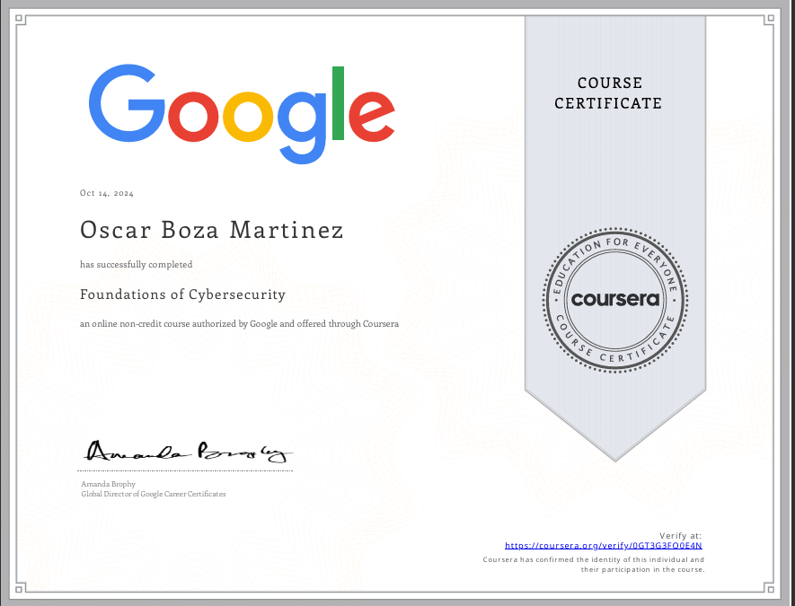
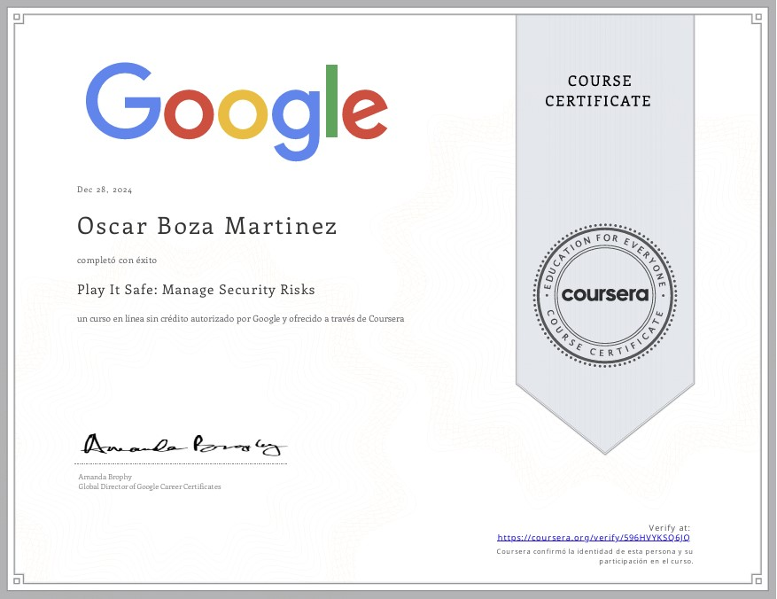

Google Cybersecurity
Professional training covering foundational cybersecurity concepts, risk identification, security operations and practical tools.
CERTIFICATIONS / VERIFIED TRAINING
A focused archive of verified professional training and credentials. Only completed certifications are shown here.

Professional training covering foundational cybersecurity concepts, risk identification, security operations and practical tools.

Technical training in risk identification, security frameworks, SIEM tooling and incident-response fundamentals.
NEXT / LEARNING
My portfolio focuses on what I can build: digital products, web apps, SaaS, e-commerce, AI integrations and automated workflows.
View what I build ↗